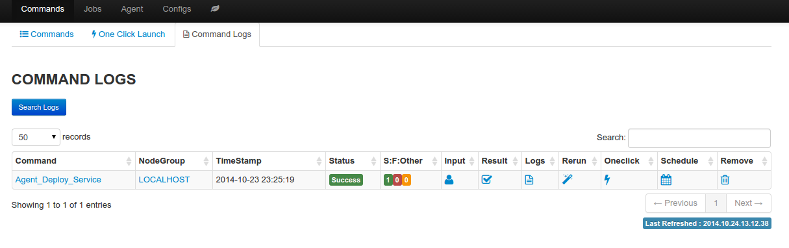
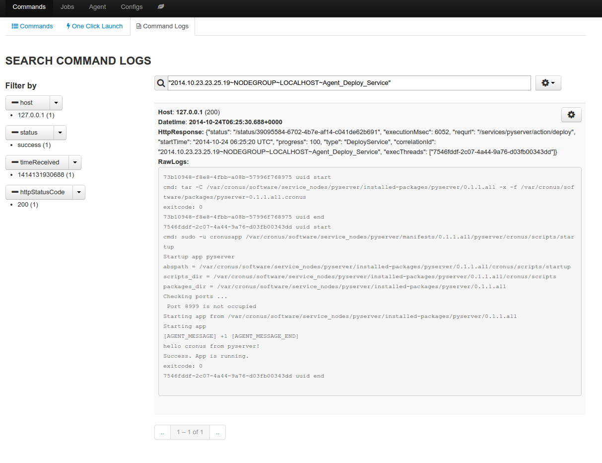

Command Log¶
Log provide important information about result of command job, and provide chance to create new oneclick launch and recurring job.
Information available from the log
- status: status of the job (running|success|failure)
- S:F:Other: number of nodes for each status value
- input: customize user data
- result: summary of the result in json format, the raw response form the target node are truncated to 200 characters
- logs: full text search of the job result, as well as raw logs from the target node
- rerun: run the same command job again
- oneclick: create a new oneclick launch from the command job
- schedule: create a recurring job from the command job
- remove: delete the particular log, as well as related full text search entry
command logs
full text search
